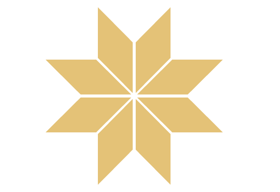

Сознание и энергия
Сознание человека — это не просто результат биохимических процессов, но сложная сеть энергии и вибраций, взаимодействующая с тонкими слоями реальности. За пределами обычного восприятия скрываются невидимые силы, которые формируют наши мысли, эмоции и судьбу.
Энергетическое поле человека, традиционно изучаемое в биоэнергетике и эзотерических практиках, является мостом между физическим и нефизическим измерениями. С помощью осознанного взаимодействия с этим полем возможно обнаружить скрытые паттерны, влияющие на психику и духовное состояние.
Практики, такие как Таро, хирология и работа с Дизайном Человека, позволяют установить контакт с этими невидимыми структурами и направлять энергию сознательно. Таким образом, человек получает возможность не только понимать себя глубже, но и влиять на свою жизненную траекторию.
Постижение этой связи между сознанием, энергией и подсознательными силами требует внимательного наблюдения, медитативной практики и открытости к необъяснимому.
Парапсихология исследует скрытые возможности человеческого сознания — телепатию, ясновидение, психокинез, предчувствие и взаимодействие с энергетическими структурами мира. Это наука о тонких связях между мыслью и материей.
Изучая эти явления, человек открывает более глубокое понимание своей природы и силы духа, а также осознаёт, что границы реальности шире, чем принято считать.
ЭНЕРГЕТИЧЕСКОЕ ТЕЛО
Наше тело состоит не только из кожи, мышц и костей, как это принято считать. Помимо физического тела, человек обладает так называемым энергетическим телом, которое остаётся невидимым для обычного человеческого зрения, но, согласно эзотерическим представлениям, может быть воспринято сверхчувствительными людьми или с помощью специальных технических средств.
Это энергетическое тело в различных эзотерических учениях обозначается по-разному: «астральное тело», «сидерическое тело», «аура», «тело души», а в ряде концепций XX века — как «тело биоплазмы».
Считается, что оно состоит из концентрированной и связанной космической энергии, является носителем жизненной силы и формирует энергетическую матрицу или структурный каркас, по которому строится материальное тело.
Согласно эзотерической традиции, энергетическим телом обладают не только люди, животные и растения, но также и неорганические структуры, где оно отвечает за их внутреннюю организацию и форму.
В качестве аналогии часто приводится симметричное строение кристаллов, которые образуются из большинства известных веществ при наличии центра кристаллизации.
С эзотерической точки зрения человек представляет собой единство трёх начал:
ТЕЛО + ДУША + ДУХ
Соединяющей силой между телом (материальной формой) и духом (энергетическим началом) выступает душа, которую в данной концепции можно рассматривать как биоэнергетическое взаимодействие между физическим и тонким уровнями бытия.
Энергетическое тело человека возникает из концентрированной космической энергии в момент синтеза двух энергетических тел: яйца и зародышевой клетки. Его структура определяется в значительной степени преобладающей в этот момент космоэнергетической констеляцией (что объясняет влияние расположения планет и биоритмических пропорций на момент зачатия).
С самого начала своего возникновений тело имеет связь с содержанием космического сознания и архаичного подсознания (здесь мы имеем объяснение феномену реинкарнации, т.е. воспоминанию о прежней земной жизни). Сразу же после своего возникновения энергетическое тело начинает через подсознание передавать информацию материальному телу для его структурного построения.
Энергию для поддержания своих психических функций энергетическое тело получает от свободной космической энергии, которую оно может непосредственно воспринимать с помощью так называемых чакр (санскрит: колесо). В преобразованной форме часть этой энергии оно отдает материальному телу как "жизненную энергию".
Информацию из окружающего мира энергетическое тело принимает также через чакры в форме космоэнергетических импульсов. Эти импульсы и информация, приходящие из сознания, накапливаются в подсознании и там перерабатываются. Внутри энергетического тела информационные импульсы передаются через систему нади или меридианов (обе системы — индийские нади и китайские меридианы — идентичны друг другу).
Так как космоэнергетическая распределительная система энергетического тела посредством биоэнергетического взаимодействия связана с нервными сплетениями материального тела, то в любое время материальному телу может быть передана космическая энергия как "энергия жизни". Таким образом возможно прямое воздействие на материальный организм через космоэнергетические импульсы.
Энергетическое тело бессмертно. Оно было до рождения и после смерти человека отделяется от его материального тела, чтобы существовать дальше как составная часть космического сознания (поэтому возможны контакты с умершими, например, посредством "пишущего стола").
ПОЛЕ ПСИ
В большинстве культур древности мистики сообщали своим народам об ореоле (от греч. "аура" — воздух, дуновение), который якобы окружает каждое человеческое тело. Без сомнения, именно эти описания привели в итоге к появлению образных изображений ореола на рисунках, статуях и монетах.
Египтяне, индусы, персы, греки и римляне рассматривали ореол исключительно только как характеристику своих богов. Это понимание затем было перенято, как и многие другие языческие представления, христианством, поэтому уже в живописных работах раннего христианства можно увидеть изображения ореола. В противоположность представлениям прежних культур, в которых ореол окружает всю фигуру, здесь он выступает только в форме сияния вокруг головы и является атрибутом пророков, апостолов, святых и ангелов.
Каббала, тайное учение евреев, которая включает в себя все неиудейские священные книги и устные предания, знакома с аурой как составной частью так называемого астрального тела, представляемой как тонкая материя, которая пронизывает все материальные субстанции человеческого организма и воспринимается иногда визуально.
Ту же ауру, которая описана в каббале, установил Фрайхерр фон Райхенбах с помощью своих медиумов как у органических, так и у неорганических тел. В процессе этих исследований многие сверхчувственные люди сообщали, что аура человека подвержена постоянному изменению в зависимости от характера, настроения и строения тела по форме, цвету и интенсивности. Хотя многие ученые отклоняли выводы Райхенбаха, имелось некоторое количество серьезных представителей схоластической науки, которые проводили дальнейшее изучение ауры.
Особенно известны в этой связи стали исследования ауры лондонским врачом д-ром Уолтером Килнером (1847—1920), который открыл в начале нашего столетия, что аура становится видимой при наблюдении через стеклянную пластинку, окрашенную дицианидом. Килнер описывал ауру как облако излучения, которое распространялось до 20 см от периферии тела и проявляло четкий цветовой спектр. Позже он обнаружил, что болезни, усталость, смена настроения, магнетизм, гипноз или электрическое воздействие могут изменять величину этого пульсирующего облака и влияют на интенсивность цветового излучения. Он разработал и описал многие методы диагноза на основе видимой ауры (используя так называемый "экран Килнера") и постоянно указывал на связь между симптомами болезней и видимой вокруг их тонковещественной оболочки.
Другими исследователями ауры были проф. д-р Рорбахер и проф. д-р Рогельсбергер. Огромный интерес вызвали исследования проф. д-ра Фердинанда Зауербруха (1875—1951). Зауербрух пользовался всемирной известностью как врач и хирург. Он смог даже доказать существование электрического поля в ауре.
Исследования Зауербруха были продолжены в середине семидесятых годов японским ученым д-ром Хидео Ушида и принесли результаты, которые вызвали сенсацию в кругах специалистов. Ушида разработал для своих исследований измерительный прибор, который позволил ему точно измерить ауру и таким образом доказать ее существование.
Как и другие исследователи ауры до него, Ушида смог установить, что в форме ауры находят свое выражение недосыпание, прием пищевых ядов, физические или духовные недуги. Например, если испытуемый страдал от депрессии, часть ауры вокруг головы заметно вибрировала, в то время как потребление продуктов питания четко изменяло другую небольшую часть ауры, расположенную в центре тела.
КОСМИЧЕСКАЯ ЭНЕРГИЯ

Представление о существовании универсальной космической энергии, которую человек может использовать и с помощью которой реализуются сверхчувственные феномены, имеет глубокие корни в культурах всех народов.
Самое известное представление, которое мы находим в индийской философии, — это существование праны, понимаемой как космическая энергия, существующая в пяти различных формах и поддерживающая жизненные процессы как «ветер тела».
В священных текстах индусов и буддистов описывается такая же космическая праэнергия, обозначенная мистическим слогом «Ом» или «Аум». Оба слога должны вызывать в мозгу колебания, которые приводят различные чакры (нервные центры человека) в состояние, позволяющее принимать космическую жизненную энергию.
Библия описывает невидимую жизненную силу, которая поддерживает общее божественное начало, как «Святой дух».
«Или вы не знаете, что ваше тело является храмом Святого Духа, который в вас есть, который вы приняли от Бога и который вам самим не принадлежит?»
В японском учении акупунктуры мы находим понятие «Ки», в китайском — «Чи»: обозначение жизненной энергии как реки, исток которой находится в точке выше пупка и которая распространяется по всему телу через сеть так называемых меридианов.
Вся материя рассматривается как проявление этой энергии на материальном уровне.
Аристотель, великий греческий философ и ученый (384—322 до н.э.), использовал обозначение «эфир» для пятой стихии, которая включала все объекты, находившиеся вне земной атмосферы.
И человеческий дух, описанный Аристотелем как чистая нематериальная энергия, происходил, по его пониманию, из эфира.
Физики Средневековья объясняли эфир как субстанцию, наполняющую пространство. Они предполагали, что свет вызывается движениями волн в этом эфире, который переносит его сквозь вакуум к Земле, поэтому он часто назывался «светоносным эфиром».
Сэр Исаак Ньютон понимал под эфиром не только среду, наполняющую всемирное пространство, но и был убежден, что им пронизаны вся материя и даже отдельные атомы.
150 лет назад немецкий химик и естествоиспытатель Карл-Людвиг Фрайхерр фон Райхенбах начал экспериментировать с так называемой им «жизненной энергией» — «Одкрафт».
Эта сила «Од» проявляется как мистическое свечение, исходящее из периферии человеческих, органических и неорганических тел и может быть воспринята сенситивными людьми без помощи техники.
Райхенбах знал, что существуют сенситивные и менее сенситивные люди, различающиеся по степени восприятия этой энергии.
НЕЙТРИНО
Астрономы могут подсчитать, используя измерения видимых световых, ультрафиолетовых, инфракрасных и рентгеновских лучей, а также космического радиоактивного излучения, падающих на Землю от галактических объектов и звёзд, общую массу всей имеющейся в космосе материи, так как она эквивалентна энергии.
Энергия гравитации, которую излучает эта масса, слишком мала для того, чтобы удержать все галактики вместе. Они должны были бы стать жертвой собственной динамики и распасться.
Но так как этого не происходит, должен существовать некий «клей», который их скрепляет.
По всей вероятности, этим фактором являются нейтрино — крошечные электрически нейтральные частицы с минимальной массой.
Нейтрино являются энергетическими частицами, которые, хотя и обладают почти нулевой массой, всё же имеют крайне незначительную массу приблизительно в 10 электронвольт.
Они возникли в первые секунды появления космоса и, таким образом, существовали с самого начала Вселенной.
Нейтрино могут производить материю: например, если нейтрино сталкивается с нейтроном, то возникают электрон и протон, которые вместе могут образовать атом водорода — материальную и энергетическую основу Вселенной.
Итак, можно с большой вероятностью предположить, что энергия нейтрино соответствует той легендарной праэнергии жизни, которая известна во всех культурах под различными обозначениями и наименованиями.
Однако даже самая правдоподобная гипотеза остаётся лишь предположением до тех пор, пока не будет доказана как факт.
Поэтому, чтобы избежать терминологической путаницы, было введено понятие «космическая энергия» для обозначения энергии, с использованием которой реализуются все феномены Пси посредством биоэнергетического взаимодействия.
Некоторые эзотерические и философские школы проводят символические параллели между нейтрино — одними из самых загадочных частиц современной физики — и концепцией универсальной жизненной энергии. Следует отметить, что подобные интерпретации не являются общепринятыми научными теориями, а представляют собой философское осмысление современных физических открытий.